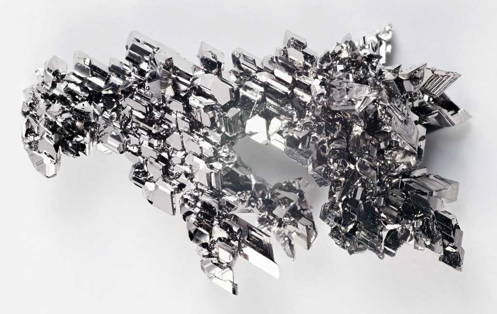
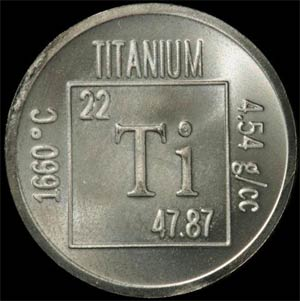

Титан
Тита́н (химический символ — Ti, от лат. Titanium) — химический элемент 4-й группы (по устаревшей классификации — побочной подгруппы четвёртой группы, IVB) четвёртого периода периодической системы химических элементов Д. И. Менделеева, с атомным номером 22. Относится к переходным металлам. Простое вещество титан в нормальных условиях — это лёгкий металл серебристо-белого цвета. Обладает высокой коррозионной стойкостью в растворах щелочей и большинства кислот.
Открыт в 1791 г. английским химиком-любителем У. Грегором и независимо в 1795 г. М. Клапротом, который дал элементу название в честь титанов – детей Урана и Геи в греческой мифологии.

Содержание титана в земной коре 0,63 % по массе. Важнейшие минералы рутил, ильменит, титаномагнетит, перовскит и титанит; см. также Титановые руды.

Металлический титан используют главным образом для получения прочных лёгких сплавов, которые применяют в авиа-, ракето- и судостроении, химической, газовой, нефтяной и пищевой промышленности, криогенной технике, медицине и других отраслях.